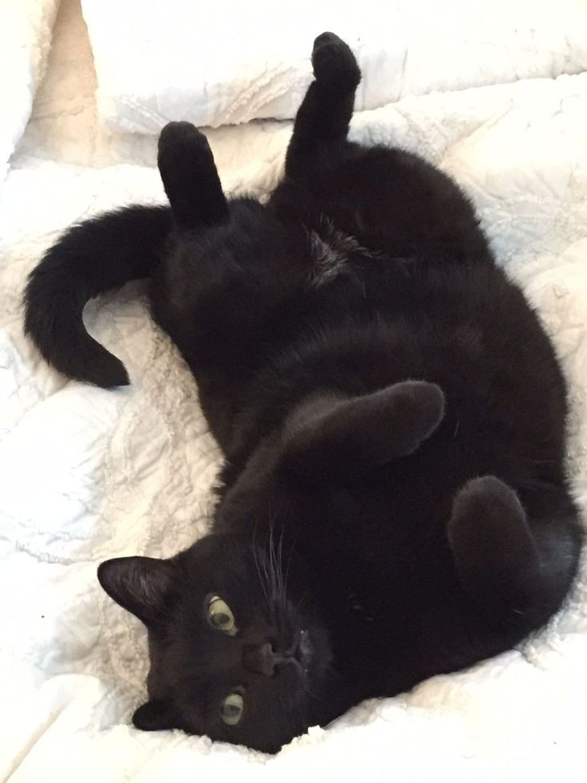
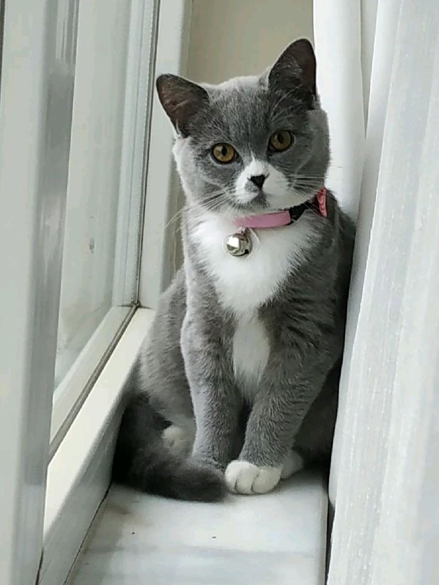

Have a Lost Pet or Person? Report Here!
If you've lost a pet or person, you can post a report here. This platform helps you connect with a community that might have spotted your loved ones or can assist in the search efforts. Below you’ll find recently reported lost cases. If you have information about a missing individual or animal, please contact the person listed in the report.
Recent Lost Reports

Milo - Lost Golden Retriever
Location: Westside Park
Last Seen: April 25, 2025
Status: Missing
Milo was last seen playing in Westside Park. He ran off after a loud noise from construction work nearby. His owner is offering a reward for any information leading to his return.
Contact: Jane Doe - (123) 456-7890
Update: Milo has not been found yet. Search efforts are ongoing.

Luna - Lost Black Cat
Location: Downtown Area
Last Seen: April 20, 2025
Status: Missing
Luna, a shy black cat, went missing from her home near Downtown. She may be hiding in the neighborhood. Her family is asking for any help in locating her.
Contact: John Smith - (987) 654-3210
Update: No new updates at this time. Please keep an eye out in the downtown area.
Max - Missing Person
Location: River District
Last Seen: April 22, 2025
Status: Missing
Max, a local resident, went missing during a visit to the River District. His family is worried, and the authorities are actively investigating his disappearance.
Contact: Sarah Lee - (555) 123-4567
Update: Max's family has not received any new leads. If you have information, please reach out.

Fluffy - Lost Poodle
Location: East End
Last Seen: April 18, 2025
Status: Found
Fluffy, a small white poodle, was found wandering the streets of the East End. Thanks to a kind passerby, Fluffy is now safely back with her owner.
Contact: Emma Brown - (321) 654-9870
Update: Fluffy has been reunited with her family. Thank you to everyone who helped!
Report Your Lost Pet or Person
If you have lost a pet or person, please use the form below to submit a report. You can also upload a photo and provide any relevant details to help others assist in the search.